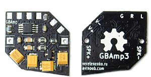
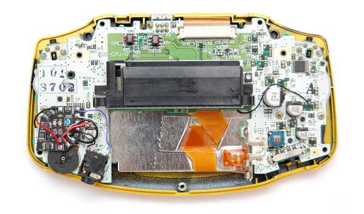

GBAmp3
About
GBAmp is a little but powerful amplifier module made to fit your favourite Game Boy.Most Game Boys has pretty low spekaer volume, but GBAmp can make it sound so that your neighbours can hear it :) GBAmp is a "Hi-Fi" grade Class-D amplifier which is more power efficient than Game Boy internal amplifier. This can help your batteries last longer.
You can also read the full GBAmp story.
New in version 3
Mute speaker when headphones inserted. Most requested feature!Better fit for Game Boy Color if using original speaker.
Game Boy Advance supported.
It's cool black now!
Buy
You can buy it on Tindie with slim speaker/wires, also available at Retro Modding.Also you can write me a message in case GBAmp is out of stock and/or to make preorder. Accepting PayPal.
How to Install
Select your Game Boy model to get installation guide
You will need
- 8 wires of AWG 28-30
- Basic soldering iron and some solder
- Skills


You will need
- 8 wires of AWG 28-30
- Basic soldering iron and some solder
- New slim speaker (but original works too) for better fit and loudness
- Skills
- In case you do not have EM4 component on the pcb, solder green wire to the green circled pad.
There is a rigidity bar inside back GBC shell, it should go just left of yellow things on module, if installed like on picture.


You will need
- 8 wires of AWG 28-30
- Basic soldering iron and some solder
- New slim speaker, original speaker would not let module to fit!
- Skills


You will need
- 8 wires of AWG 28-30
- Basic soldering iron and some solder
- Original or new slim speaker
- Special version of GBAmp3 for GBA
- Mad Skills
Follow wires guide picture to see where to solder each wire.
Put module as shown on installed picture, otherwise it would not fit.
Wiring Method 1, Simple:
This picture has G black (silver) wire soldered wrongly due to the old wiring guide, be aware:

Wiring Method 2, Less Noise:
